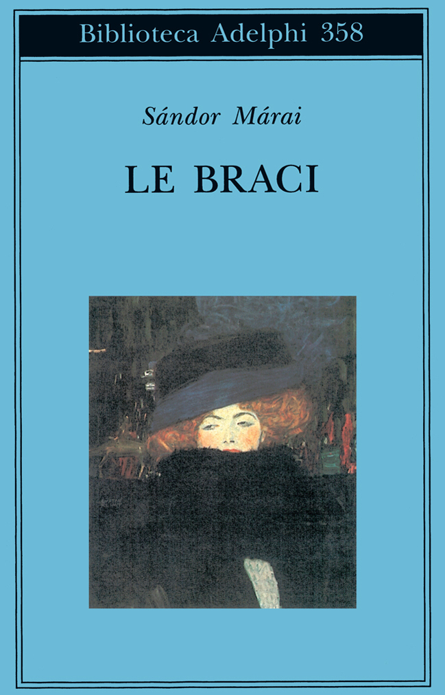
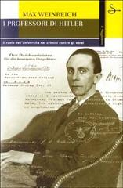

17:48 · 5 OPERE
Credevate davvero che sarebbero tornati con la croce uncinata?
Il filo del discorso
La domanda sul ritorno dell’autoritarismo apre una polemica di Dr Divago sul ruolo culturale delle università. Il relatore accosta episodi italiani e testimonianze storiche, interpretando alcune dichiarazioni pubbliche come segnali di antisemitismo e perdita del giudizio critico. La lettera rubata di Poe fornisce l’analogia di ciò che rimane inosservato pur essendo esposto. Il confronto con I professori di Hitler e il richiamo a Postman conducono alla domanda finale sulla formazione delle nuove generazioni e sulla responsabilità di chi insegna e informa.
I libri nel discorso

Le braci
Copertina: Adelphi · Biblioteca Adelphi 358 · 1998 · a cura di Marinella D’Alessandro
Immagine autentica dell’opera, controllata visivamente; non identifica l’edizione usata nel video.
Titolo e autore sono nominati esplicitamente, ma la frase attribuita al romanzo non è stata convalidata.
Passaggio 0:06 ↗ · Fonti e libro ↗
La lettera rubata
Copertina: Mursia · I Picci one · edizione del singolo racconto
Immagine autentica dell’opera, controllata visivamente; non identifica l’edizione usata nel video.
La lettera rubata ed Edgar Allan Poe sono nominati con la trama della missiva nascosta in vista.
Passaggio 5:25 ↗ · Fonti e libro ↗
I professori di Hitler. Il ruolo dell’università nei crimini contro gli ebrei
Copertina: Il Saggiatore · 2003 · traduzione di Cesare Salmaggi
Immagine autentica dell’opera, controllata visivamente; non identifica l’edizione usata nel video.
Autore e titolo italiano sono annunciati nel confronto storico.
Passaggio 9:40 ↗ · Fonti e libro ↗
Divertirsi da morire. Il discorso pubblico nell’era dello spettacolo
Copertina: Luiss University Press · 2021 · prefazione di Matteo Bittanti
Immagine autentica dell’opera, controllata visivamente; non identifica l’edizione usata nel video.
Neil Postman, Amusing Ourselves to Death e Divertirsi da morire sono nominati.
Passaggio 14:24 ↗ · Fonti e libro ↗
I vestiti nuovi dell’imperatore
Identificazione probabile
Copertina: Rizzoli, 2014 · eBook di riferimento
I panni nuovi dell’imperatore sono un’allusione probabile alla fiaba, non una lettura annunciata.
Passaggio 17:22 ↗ · Fonti e libro ↗